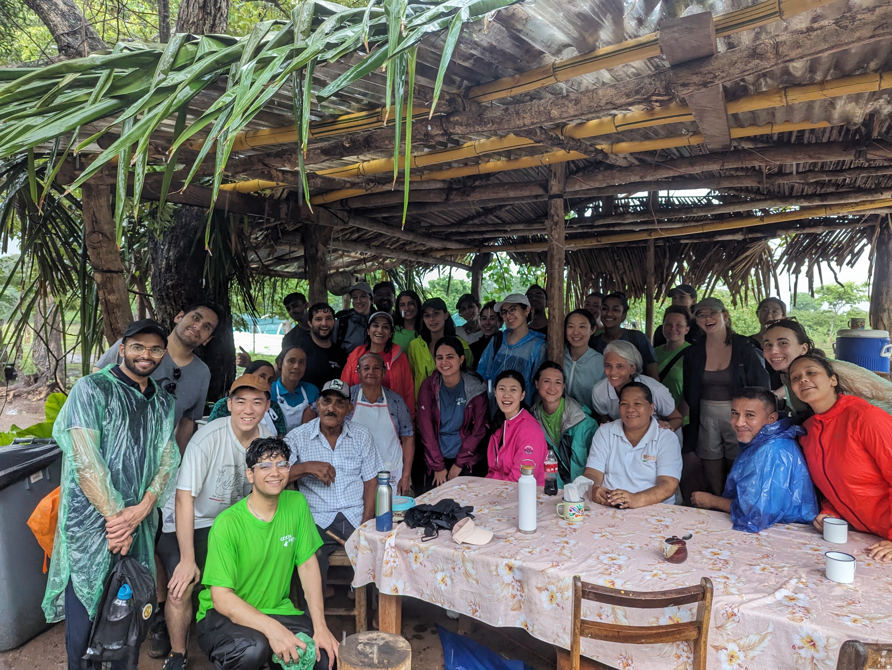

A glimpse into my social work and hobbies through photos, videos, and gifs.

Aiding MicroFarms In Costa Rica Through a Farm App
In the center of the table, the leader of one of the eleven key communities, proudly wearing a checked shirt, represents the heart of the Home Gardens Initiative. This project, in collaboration with the Ministry of Agriculture under Creciendo Juntos, supports locals impacted by tourism declines. By using advanced European microgarden techniques, we're empowering home gardeners to grow healthy vegetables effortlessly.
This picture captures a special moment of gratitude from the tribe, who prepared a delicious meal for us after a day of hard work in the fields. Their hospitality and warmth were truly inspiring.
As part of the McGill Costa Rica Study Trip, each year, students participate in planting trees. This annual tradition aims to foster a sense of community while contributing to Costa Rica's afforestation efforts. Over the years, this initiative has grown into a meaningful contribution to the country's reforestation goals, embodying our commitment to environmental sustainability and community building.
Social Emotional Intelligence Project
Emotional Intelligence – Happiness session with sweet kids from Seelampur slum
Electric Guitar Riff Run Through
Stream of Consciousness By Dream Theater
Full Band Cover
Instrumedley By Dream Theater
Trail Running
Exploring nature and staying fit through trail running adventures. Captured some breathtaking views during my runs.
Social Work & Hobbies
A glimpse into my social work and hobbies through photos, videos, and gifs.
Aiding MicroFarms In Costa Rica Through a Farm App
In the center of the table, the leader of one of the eleven key communities, proudly wearing a checked shirt, represents the heart of the Home Gardens Initiative. This project, in collaboration with the Ministry of Agriculture under Creciendo Juntos, supports locals impacted by tourism declines. By using advanced European microgarden techniques, we're empowering home gardeners to grow healthy vegetables effortlessly. This picture captures a special moment of gratitude from the tribe, who prepared a delicious meal for us after a day of hard work in the fields. Their hospitality and warmth were truly inspiring.
Learn MoreYearly Afforestation Initiative
As part of the McGill Costa Rica Study Trip, each year, students participate in planting trees. This annual tradition aims to foster a sense of community while contributing to Costa Rica's afforestation efforts. Over the years, this initiative has grown into a meaningful contribution to the country's reforestation goals, embodying our commitment to environmental sustainability and community building.
Social Emotional Intelligence Project
Emotional Intelligence – Happiness session with sweet kids from Seelampur slum
Electric Guitar Riff Run Through
Stream of Consciousness By Dream Theater
Full Band Cover
Instrumedley By Dream Theater
Trail Running
Exploring nature and staying fit through trail running adventures. Captured some breathtaking views during my runs.
Learn MoreMusic Production
Creating and producing music in my home studio. Check out some of my tracks and production techniques.
Learn MoreCafé Exploration
Exploring new cafés and bars, trying out different coffee brews and dishes, and soaking in the ambiance.
Learn More